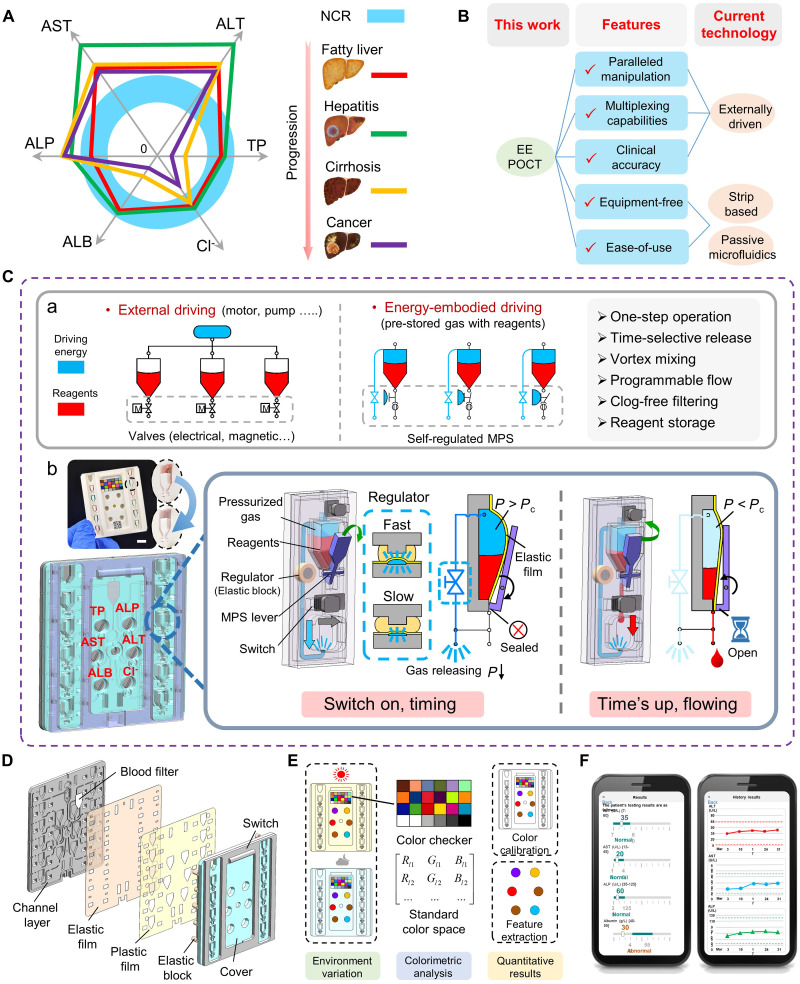

Equipment-free liver-function testing
A cartridge uses stored pneumatic energy for parallel liquid handling and colorimetric liver-function measurements.
An energy-embodied paralleled liquid manipulation for equipment-free, quantitative multiplexed liver function monitoring · Paper ↗
